M3 · Notes A — What EDA is, and its core goals (§3.1–3.2)
Module 3 notes, Exploratory Data Analysis, Feature Engineering, and Statistical Thinking, pp. 315–365 (PDF pages 5–55) · Quiz 3 syllabus (with Notes B)
EDA is the stage where you get to know a dataset before you model it or test anything. In order, this page covers: what EDA is and its iterative pipeline (3.1.1–3.1.2); exploratory versus confirmatory analysis and how to keep them apart (3.1.3–3.1.4); the unit of analysis and why it matters (3.1.5–3.1.6); the recommended workflow (3.1.7); and the six core goals of EDA — distributions (with the pathological-plot gallery), relationships, anomalies, missingness, bias (including the Big Data paradox) and subgroups (3.2.1–3.2.6).
3.1.1 What is exploratory data analysis?
Exploratory data analysis is the systematic investigation of a dataset before formal modelling, hypothesis testing or confirmatory inference. It was established by John W. Tukey (Exploratory Data Analysis, 1977), who argued that analysts should explore data for unexpected structure rather than only confirm hypotheses chosen in advance.
EDA is not "make nice graphs and compute averages". It is a process of asking questions of the data with numerical and graphical tools. Through it an analyst can:
- understand the structure and composition of the dataset, and each variable's distribution;
- find patterns, trends and relationships;
- spot missing, duplicated, inconsistent or wrong values, outliers and unusual cases;
- check whether statistical assumptions look reasonable;
- generate hypotheses, decide on transformations and preprocessing;
- judge whether the task is feasible, and guide the choice of models.
It is exploratory because you do not start from one fixed conclusion: you look, notice something, ask a new question, and look again. The NIST handbook puts the aims as: maximise insight, uncover structure, detect outliers and anomalies, test assumptions, develop parsimonious models, and determine good factor settings.
EDA = systematic, question-driven investigation of data before formal modelling or testing (Tukey, 1977).
3.1.2 The EDA pipeline

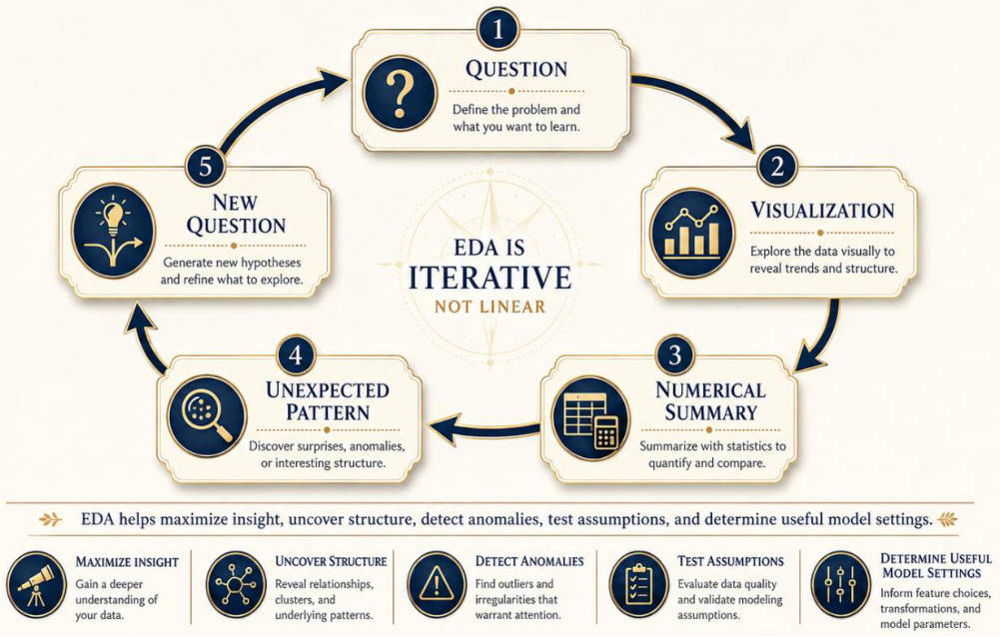
EDA is a cycle, not a straight line: a question → a visualization and numerical summary → an unexpected pattern → a new hypothesis → a refined question. Example: a scatterplot shows two variables are related but also shows a few odd points; numerical summaries of those points raise a new question — are they genuine cases, measurement errors or data-entry problems?
Graphical methods (histograms, boxplots, scatterplots, bar charts, density and time-series plots) reveal patterns that numbers hide; numerical summaries (mean, median, SD, range, quartiles, correlation) quantify what the plots show. EDA uses both.
Why it pays off: it catches problems before they are carried into modelling — heavy missingness, extreme outliers, strong skew, duplicates, wrong values, unexpected relationships. But EDA is a foundation for, not a replacement of, formal inference: a pattern found in exploration may be due to chance, selection or quirks of this dataset.
EDA shows students sleeping 7–8 hours score higher than those sleeping under 5. That is a hypothesis, not a causal finding: longer sleepers may also be less stressed, study better or have steadier schedules. A later confirmatory analysis (e.g. regression controlling for study time and stress) would test it properly.
EDA is iterative — each finding raises the next question — and combines plots with numbers; it generates hypotheses, it does not confirm them.
3.1.3 Exploratory versus confirmatory analysis
| exploratory (EDA) | confirmatory | |
|---|---|---|
| goal | discover what the data may reveal | evaluate a specific claim |
| hypotheses | generated from the data | specified before seeing the data |
| procedure | flexible, iterative | fixed in advance (design, model, decision rule) |
| output | patterns, questions, candidate hypotheses | evidence for or against a hypothesis (-values, intervals) |
The danger is data-dependent decisions. If the same data are used to
the final -value or confidence interval no longer means what it would if the hypothesis had been fixed in advance — the result looks stronger than it is, because the data were used both to find the result and to prove it.
A researcher explores sleep, exercise, screen time, breakfast, caffeine and study time for 500 students, notices sleep looks related to scores, picks the regression that makes the relationship strongest, and reports "significant". With six candidates examined, one strong-looking relationship can appear by chance. The exploration was useful — it found a hypothesis — but it should be tested on new data, a held-out sample, or a pre-registered analysis.
Exploration uses data to discover what might be interesting; confirmation uses independent or properly controlled evidence to decide whether it is likely to be genuine.
3.1.4 Separating exploration from confirmation
Ways to keep the two roles apart:
- separate datasets — one to explore, one to test;
- train / validation / test partitions in predictive modelling;
- pre-registration of hypotheses, variables and analysis before the confirmatory study;
- replication on an independent sample;
- transparent reporting of every analytical decision (variable selection, exclusions, transformations, model choice).
Never treat a pattern found by exploring a dataset as confirmed by that same dataset; confirm it on separate, pre-specified or new data.
3.1.5 The unit of analysis must be defined first
The first question about any dataset: what does one row represent? A row might be a person, a hospital admission, an image, a transaction, a sensor reading, a household, a region, a session, a device-day, or a student-course pair. When many rows belong to one entity, row count is not sample size: 50,000 X-ray images from 2,000 patients are not 50,000 independent patients.
- Unit of observation: what one record is.
- Unit of prediction: the entity a prediction is made for.
- Unit of sampling: the entity or group that was selected into the data.
- Unit of evaluation: the entity at which performance or results are assessed.
They can coincide, but often do not.
| application | observation | prediction | sampling | evaluation | trap |
|---|---|---|---|---|---|
| 30-day readmission | an admission | a patient admission | hospital/department | an admission | repeat admissions of one patient are related |
| customer churn | a customer-month | a customer | region/account group | a customer | one customer in both train and test |
| crop yield | a field plot in a season | a field | a farm | a field | fields on the same farm share soil and weather |
| student dropout | a student-year | a student | university/department | a student | sampled by institution, predicted per student |
3.1.6 Why the unit of analysis matters
Getting it wrong causes:
- overstated sample sizes (repeated rows counted as independent);
- underestimated standard errors (dependence ignored → false confidence);
- data leakage — rows from the same entity in both train and test, so the model is tested on people it has effectively seen;
- misleading subgroup summaries when some entities contribute far more rows;
- wrong tests or models when the assumed independence does not hold.
Before anything else, decide what one row is, whether rows are independent, and which unit matters for the question — then split, summarise and evaluate at that unit.
3.1.7 Recommended EDA workflow

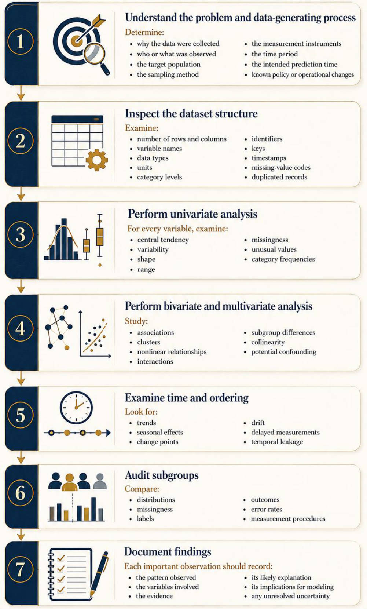
A structured, iterative workflow beats an unplanned pile of charts: understand the context in which the data were produced → inspect structure and individual variables → examine relationships, time behaviour and subgroups → document findings, assumptions, decisions and open uncertainties so they inform modelling.
3.2.1 Understanding distributions
For each variable ask: where are values concentrated? Symmetric or skewed? One mode or several? Gaps? Natural bounds? Heavy or light tails? Extremes? Different across subgroups?

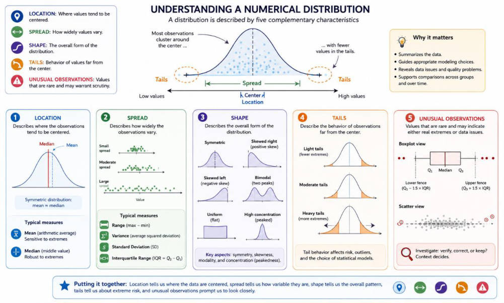

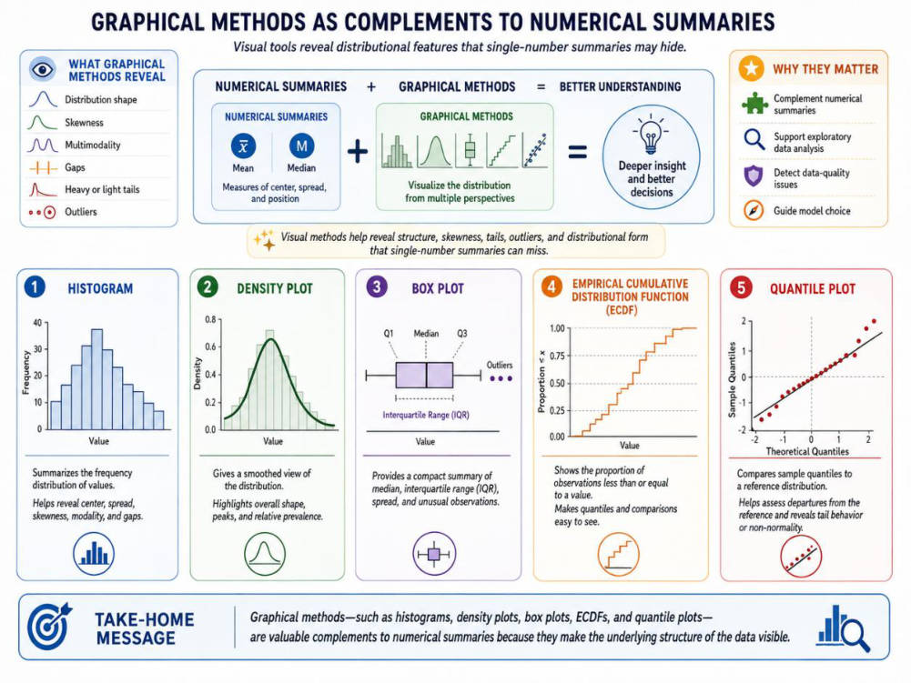
A distribution has five complementary characteristics:
| characteristic | meaning | measured by |
|---|---|---|
| location | where values centre | mean, median |
| spread | how widely they vary | range, variance, SD, IQR |
| shape | symmetry, skew, modality, concentration | histogram, density, skewness |
| tails | behaviour far from the centre | Q–Q plot, ECDF, upper quantiles |
| unusual observations | legitimate extremes or data errors | boxplot, inspection |
Pathological examples
A "pathological" pattern departs from the simple, symmetric, single-peaked shape that many methods assume. It may be genuine structure or a data-quality or plotting artefact — and looking at the same variable with several plot types is how you tell them apart.

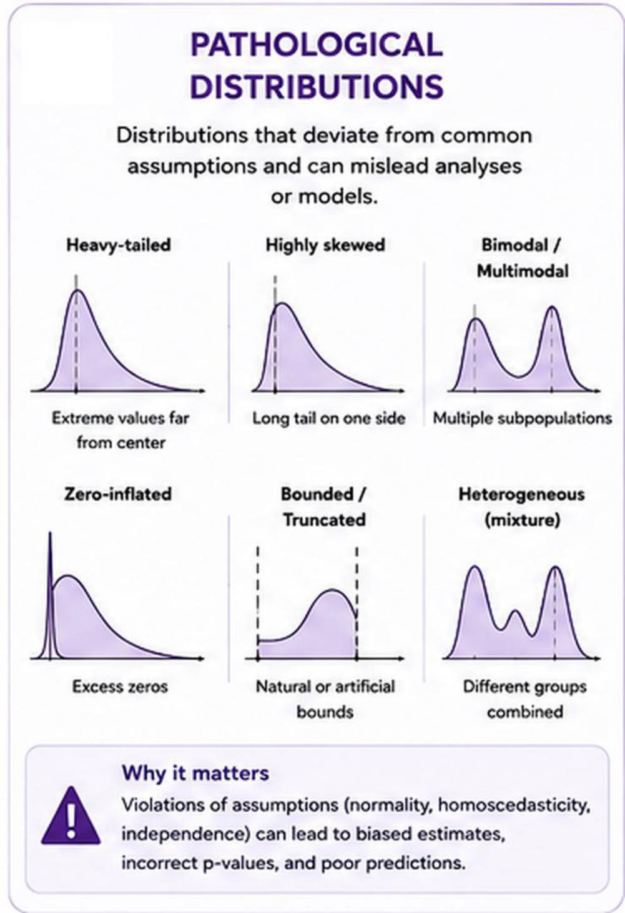
Pathological distributions — heavy tails, strong skew, multimodality, zero-inflation, truncation, heterogeneous mixtures. They arise from subpopulations, physical or administrative limits, rare extreme events, excess zeros, or non-linear processes. Then the mean and SD can mislead, and methods assuming normality, constant variance or one homogeneous population may fail. Real examples: income and wealth (right-skewed), insurance claims and losses (heavy tails), hospital length of stay (right-skewed), healthcare visits (zero-inflated), data pooled across hospitals or scanners (multimodal).

Pathological histograms — apparent gaps, isolated spikes, heaping at particular values, a pile-up at zero, domination by extremes, and a picture that changes dramatically with the number of bins. Causes may be genuine, or rounding, digit preference, measurement resolution, censoring, coding conventions or poor binning. Real examples: self-reported ages spiking at multiples of 5 or 10; prices clustering at 9.99/19.99; manual blood pressure heaped at multiples of 5 or 10 mmHg; sensor gaps from device ranges or downtime; household expenditure compressed by a few huge values.

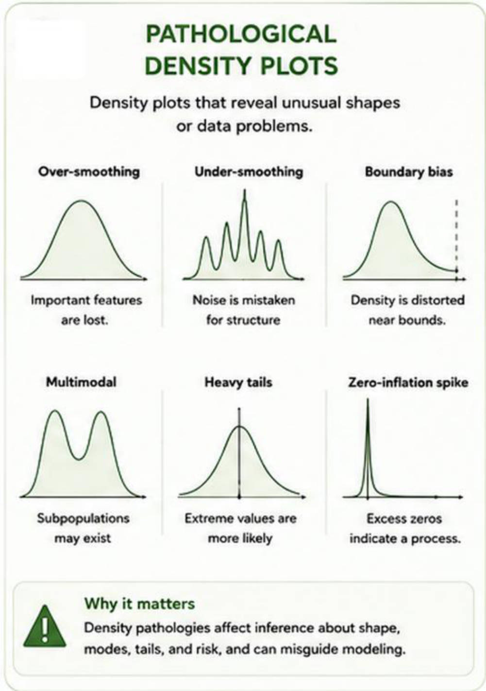
Pathological density plots — the KDE depends on its bandwidth: too much smoothing erases real peaks, too little invents spurious ones. Boundary bias puts density outside a variable's possible range (below 0, or outside for proportions). Watch for multiple modes, shoulders, heavy tails, abrupt cut-offs and sharp spikes from zero-inflation or detection limits. A density plot is an estimate of shape, not the data. Examples: BMI with several modes (mixed populations), lab values piled at a detection limit, shoulders from mixing hospitals or scanners.

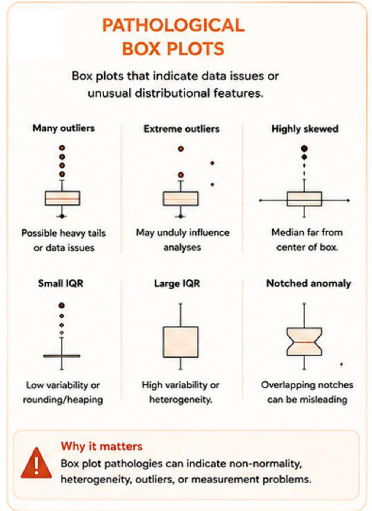
Pathological box plots — many flagged points, very long whiskers, a median pushed to one side of the box, unusually small or large IQRs, large differences between groups. Points beyond the IQR fences are not automatically errors — skewed or heavy-tailed data produce many legitimate ones. A boxplot is a diagnostic that points to what to investigate, not a deletion rule. Examples: hospital charges (many upper outliers), delivery times (long upper whisker), manufacturing dimensions (narrow box, a few faults), house prices by region (different medians and IQRs).

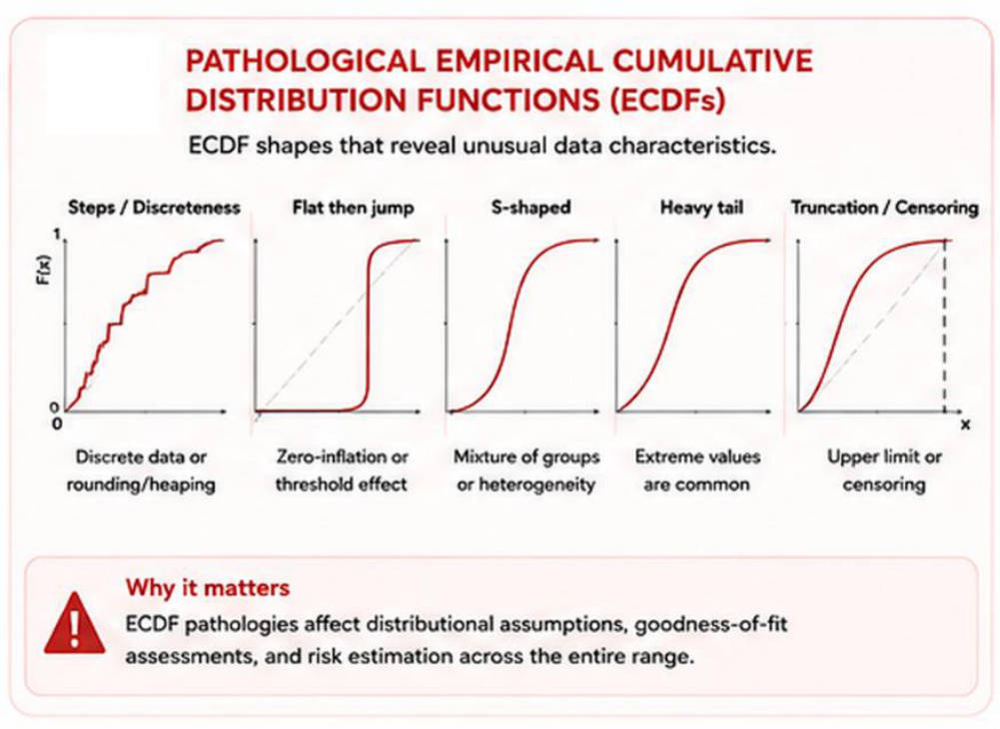
Pathological ECDFs — the empirical CDF (proportion of observations each value) needs no bins and no smoothing, which makes it good at exposing discreteness, repeated values, truncation, censoring and mixtures. Big vertical steps = many identical values; long flat stretches = ranges with no data; changes of slope = different groups or thresholds; abrupt ends or pile-ups = truncation/censoring. Examples: five-point Likert scores (staircase), rounded glucose values, survival times censored at study end, waiting times from two service regimes (two slopes).

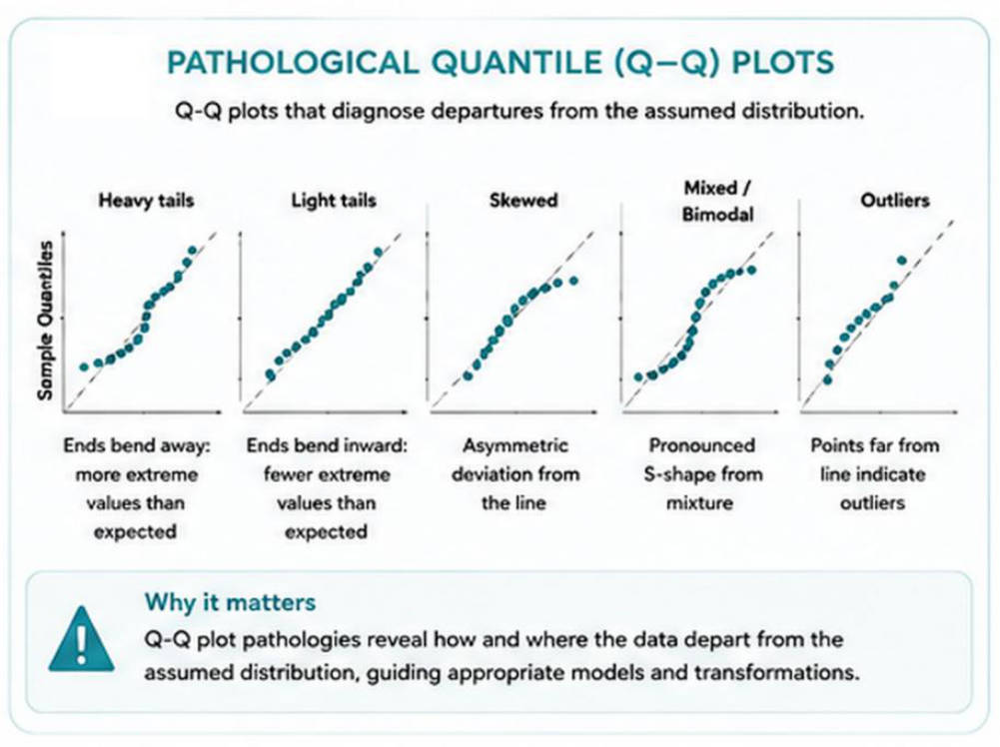
Pathological Q–Q plots — the Q–Q plot compares observed quantiles with a reference (usually normal); a good match lies on a straight line. Ends bending outward = heavy tails; inward = light tails; curved one way = skew; changes of slope or clusters = mixtures; isolated far points = outliers. Examples: financial returns (both tails heavy), concentrations (right skew until log-transformed), regression residuals S-shaped from mixed subpopulations, bounded test scores (light upper tail).
Look at a distribution's location, spread, shape, tails and unusual points, with more than one plot type; a strange shape may be real structure or an artefact of measurement or plotting.
3.2.2 Understanding relationships

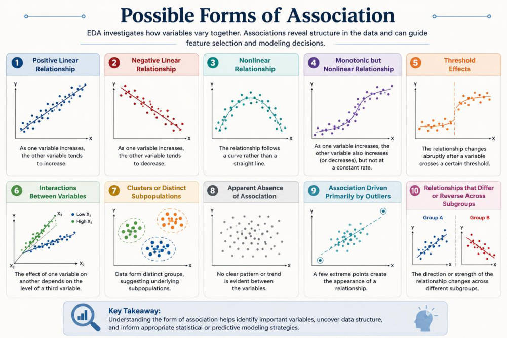
Two variables can be related positively or negatively and linearly; non-linearly; monotonically but non-linearly; through a threshold; through an interaction with a third variable; through clusters; not at all; only because of outliers; or differently (even reversed) in different subgroups. So look at relationships both overall and within relevant subgroups.
Across 1,000 adults, more exercise goes with lower blood pressure, strongly. Split by age: weak in young adults, moderate in middle age, strong in older adults. Part of the overall association reflects that older adults both exercise less and have higher blood pressure — the aggregate pattern does not describe every group.
Association is not causation. A relationship between and can arise because causes ; causes (reverse causation); a third variable drives both (confounding); the sampling/selection process created it; measurement or processing created it; or chance. EDA can describe direction, strength and form — it cannot tell which explanation is right. Causal claims need randomised experiments (RCTs) or explicit causal models and assumptions (Pearl).
A clear negative association in 2,000 adults is compatible with: exercise lowers BP; people with high BP exercise less (reverse); healthier diet/lower stress/better healthcare go with both (confounding); people who choose to exercise differ systematically (selection). A randomised exercise programme would settle it.
Describe a relationship's direction, strength and form overall and within subgroups — and never read cause from an association.
3.2.3 Detecting anomalies
An anomaly is an observation, combination or pattern very different from what the data-generating process would normally produce: a body temperature of 350 °C, a negative age, thousands of transactions per second, a sudden jump in a sensor signal, individually plausible values that are jointly impossible, an error pattern concentrated in one subgroup.
An anomaly may be a data-entry or unit-conversion error, an equipment failure — or a rare but legitimate case, fraud, an important discovery, or evidence that the distribution has shifted. So investigate, don't delete.

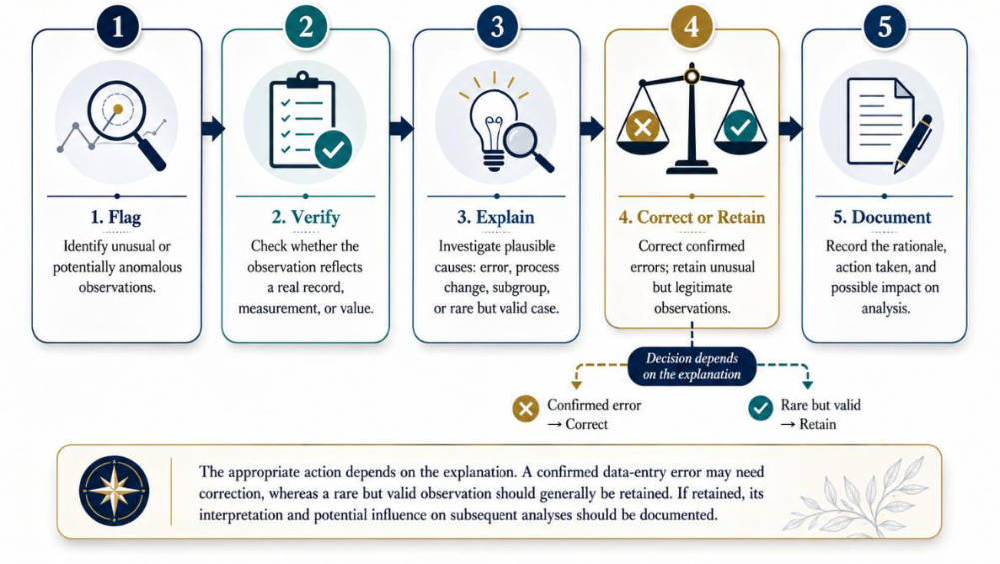
Workflow: flag → verify (source records, units, devices) → explain the cause → correct confirmed errors or retain valid rare cases → document the decision and the observation's influence on later analysis.
Anomalies are investigated, not automatically removed: flag, verify, explain, correct or retain, document.
3.2.4 Understanding missingness
Missing data carry information about how the data were generated, and they affect inference and model performance. Examine missingness at four levels:
| level | quantity | what it reveals |
|---|---|---|
| variable | which features are badly incomplete | |
| record | unusually incomplete observations (system failures, particular people) | |
| pattern | which variables are missing together | a shared cause: a failed monitor (BP and heart rate), declined sensitive questions (income and employment), tests not ordered |
| subgroup | groups with much more missing data |
Big subgroup differences cause unequal effective sample sizes, differential imputation error, distorted feature distributions and unequal model reliability — and an overall missing percentage can hide all of this.
Diabetes-risk data: income missing for 55% of Medicare (elderly) patients, 10% of Medicaid (income is documented to qualify) and 25% of privately insured. Dropping incomplete rows keeps 45% / 90% / 75% of each group, so Medicaid patients dominate what the model learns about income. Imputation is least accurate for Medicare; the observed Medicare incomes may come from an unrepresentative subset; and predictions are least reliable for Medicare patients — hidden behind one overall AUC. Remedies: report missingness by subgroup (in the datasheet), add missingness-indicator features, evaluate performance per subgroup (in the model card), and consider not using income for a group where it is mostly missing.
Labs missing for 2% of low-risk, 4% of moderate-risk and 15% of high-risk patients: the available lab data under-represent high-risk patients, so a model trained on complete cases may do worst exactly where it matters.
Measure missingness per variable, per record, as patterns and per subgroup; missingness is rarely random, and "missing" can itself be a useful feature.
3.2.5 Identifying bias
Bias here is a systematic distortion of validity, fairness or generalisability — often from how data were collected, measured, selected or labelled, not from analyst error.
| bias | definition | notes' examples | consequence |
|---|---|---|---|
| sampling | sample differs systematically from the target population | online health survey (no internet users missing); study-skills workshop attendees; recent purchasers only; gym recruits | estimates don't generalise (satisfaction, study time, activity overestimated) |
| measurement | variable measured differently across groups, sites, devices or time | miscalibrated BP device at one hospital; easier test at one school; sensor reading 2 °C high; tax records vs self-reported income; new weighing scale | apparent differences that are measurement artefacts |
| label | recorded outcome is an imperfect proxy for the construct | "dropout" includes transfers; diagnosis depends on doctor/resources; default only observed for those given credit; manager ratings; complaints ≠ dissatisfaction | the model learns the proxy, not the construct |
| survivorship | only units that "survived" a process remain | 10-year-old companies; existing funds; graduates; long-tenure employees; treatment completers | success rates and effects overestimated |
| selection | inclusion depends on variables related to the outcome | hospital patients only (smoking–heart disease); admitted students (grades–performance); employed people (health–income); completers | associations created or distorted |
| historical | data faithfully record an unequal past process | hiring/promotion records; past admissions; past treatment decisions; credit access; arrest records (policing) | the model reproduces past inequality |
"Just collect more data"? — the Big Data paradox
More data reduces random error, not systematic bias. Meng (2018) showed the error of a sample mean decomposes as
where if unit is in the dataset, is the correlation between being included and the value , is the population size, the sample size and the population SD.
- Random sample: inclusion is unrelated to , so and only random error remains, shrinking as grows.
- Big, self-selected data (social media, voluntary apps, scraped data): , so bias persists however large is — and confidence intervals become deceptively narrow around a wrong value.
- Law of large populations: for fixed , the error grows like — the same biased 100,000 does worse in a population of 10 million than of 100,000.
- Slow improvement: more data shrinks the quantity term only by .
- Meng's 2016 US-election example: about 2.3 million self-reports (≈1% of voters) had an error comparable to a genuine random sample of only about 400 people.
Name the bias (sampling, measurement, label, survivorship, selection, historical); a bigger dataset does not fix it, because error .
3.2.6 Subgroup behaviour
Aggregates can hide group differences. For groups , compute
for groups defined by age, sex/gender, geography, socio-economic status, language, device, institution, time period, disease severity or customer segment — and sometimes intersections such as (gender, age group, region), which reveal what single variables hide.
But fine-grained subgroups bring small, unstable estimates and chance findings when many arbitrary groups are tested. So:
- choose subgroups by domain knowledge and relevance (age for a blood-pressure drug, not birth month or shoe size);
- ensure adequate per subgroup;
- adjust for multiple comparisons when many are tested;
- keep pre-specified subgroup analyses separate from post-hoc findings;
- never keep splitting the data until something "significant" appears.
Subgroup analysis is also how you find where a model fails: e.g. a readmission model that is weaker for one clinical category, or a churn model that is good for long-term but poor for new customers (too little history).
Report summaries and model performance per meaningful subgroup, chosen in advance with enough data — not by searching until something appears.
Source material
The original documents behind these notes. Pick a tab to read it here, page by page, or open it in a new tab.